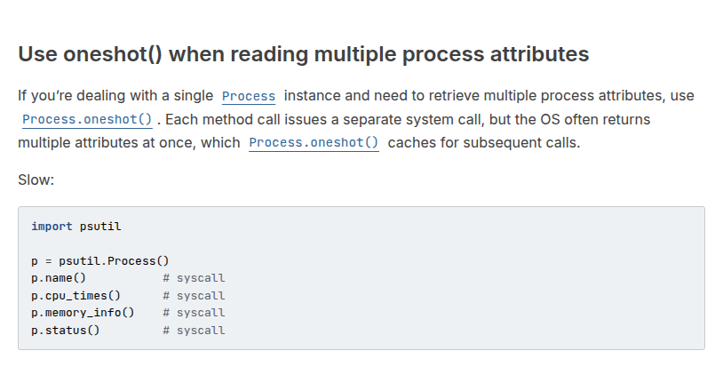
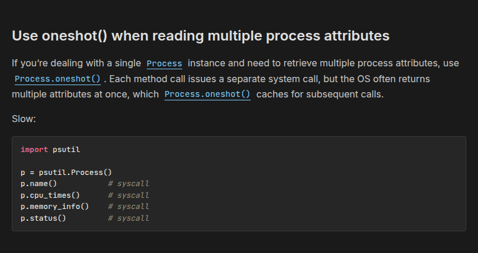
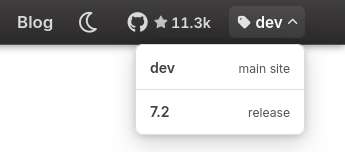
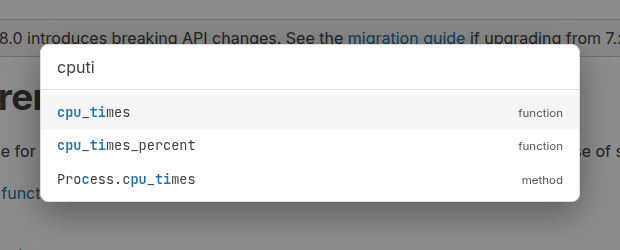
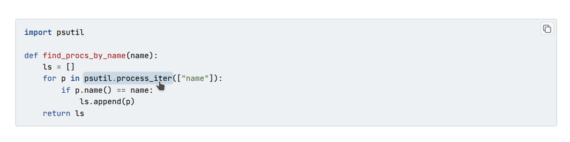
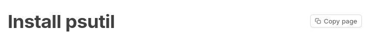
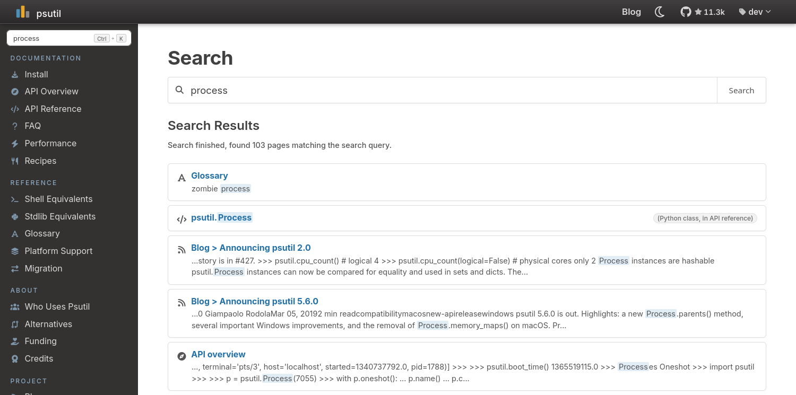
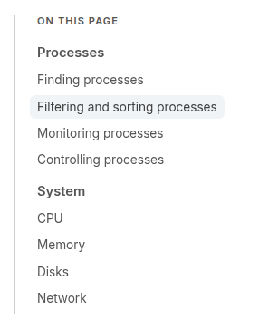
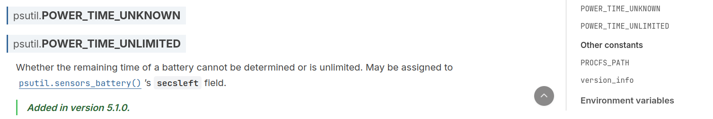
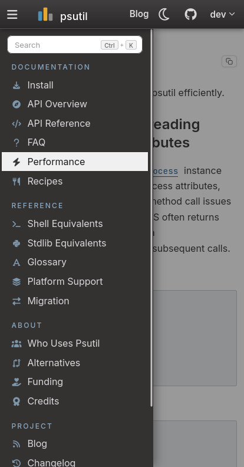

About this site¶
This site is built with Sphinx, on top of its
built-in basic theme. From there it has been heavily customized: the
layout, navigation, search, dark mode, code blocks, mobile behavior, and many
small details were rebuilt or extended specifically for these docs.
Keyboard shortcuts¶
Key |
Action |
|---|---|
Shift+D |
Toggle dark / light mode |
@ |
Go to API definition |
Ctrl+K / Cmd+K |
Focus search |
↑ / ↓ |
Navigate search or API results |
Enter |
Open the highlighted entry |
Escape |
Close menus and dialogs |
? |
Show this help |
Dark mode¶
By default the site matches your operating system’s light or dark setting. Click the icon in the top-right corner, or press Shift+D anywhere, to override it. Your choice is saved and restored on your next visit.


Documentation versions¶
The menu in the top-right corner switches between this development version of the docs, built from the master branch, and past releases.

Go to API definition¶
Press @ on any page to quickly find and jump to an API definition, like in VS Code or Sublime Text. Use the ↑ and ↓ arrow keys to navigate and Enter to open it.

Clickable API references¶
Identifiers in code blocks (e.g. p = psutil.Process(), p.cpu_percent())
are clickable. Hover over one of those to see the highlight, then click to jump
to the corresponding API reference doc. This is powered by
sphinx-codeautolink.

Copy page¶
Next to the title of every documentation page there’s a Copy page button, which copies the page’s RsT source to your clipboard. Handy for for pasting a whole page into an LLM.

Search¶
Press Ctrl+K to jump straight to the search box. Once results appear, use the ↑ and ↓ arrow keys to move through them and Enter to open one.

TOC / On this page¶
Wide screens show an “On this page” sidebar on the right, listing the current page’s sections. As you scroll it highlights the section you’re in, and clicking an entry jumps straight to it.

Back to top¶
On a long page, start scrolling back up and a small button will appear in the bottom-right corner. Click it to go back to the top of the page.

Reading on mobile¶
On a phone the navigation collapses behind the ☰ button in the top bar. Tap it to open the menu, then swipe left anywhere on the page (or tap outside it) to close it again.

Blog¶
New releases and deep-dives are written up on the blog. Blog provides a RSS feed (the icon at the top of the blog page) so you can receive notifications of new blog posts from your reader + a commenting system provided by giscus.
Other internal optimizations¶
Fonts and icons are served directly from this site, not from third-party CDNs such as Google Fonts. This means the docs renders the same from all countries (e.g. mainland China). Each font includes only the glyphs used by the site, keeping page weight small.
Links to this site shared on social medias show rich preview cards.
Every page declares a canonical URL and is listed in a generated
sitemap.xml, so search engines can discover and index the whole site.The docs build is strict: Python code snippets are syntax-checked, and broken links or unresolved API cross-references make the build fail.
Linking from your own docs¶
Other Sphinx projects can cross-reference psutil’s API directly through the
intersphinx
extension. Add psutil to intersphinx_mapping in your conf.py:
intersphinx_mapping = {
"psutil": ("https://psutil.io/", None),
}
You can then reference any psutil object and it links straight here, e.g.:
See :func:`psutil.cpu_times` function.
This will automatically turn psutil.cpu_times into a link pointing to this
site.